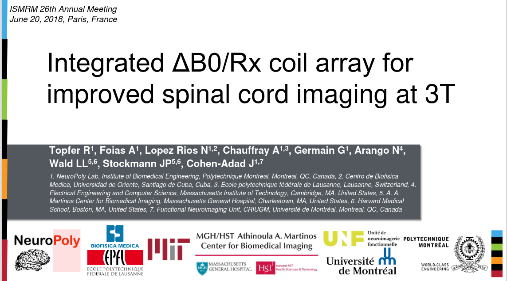

Welcome to NeuroPoly
👫
Team
🏛
Facilities
🔍
Research
RF & Shim Coil Design
Mapping Tissue Microstructure
Biophysical Modelling
In Vivo Measurement of Myelin G-Ratio
White Matter Microstructure in Multiple Sclerosis
Ex Vivo Imaging of Spinal Cord Injury
Histological Validation of Quantitative MRI
Mapping Myeloarchitecture using T2* and Magnetization Transfer
Image Processing Software
Template of the Spinal Cord
Registration Methods for Spinal Cord
Automatic Spinal Cord Segmentation
Data & Scripts
Collaborations
📚
Publications
🖥
Software
📅
Events & Workshops
📣
Job Opportunities
Software Developer
Project Manager for Software Development
MSc | PhD | PostDoc Positions
Internships
Labeling Medical Images for A.I. Applications
Medical Image Analysis
✍
Contact Us
Page Contents
RF Coils for MRI
C-Spine Coil for 7T MRI
Real-time shimming
RF & Shim Coil Design
¶
The RF Lab is supported by
TransMedTech
.
RF Coils for MRI
¶
C-Spine Coil for 7T MRI
¶
Real-time shimming
¶

previous
🔍
Research
next
Mapping Tissue Microstructure